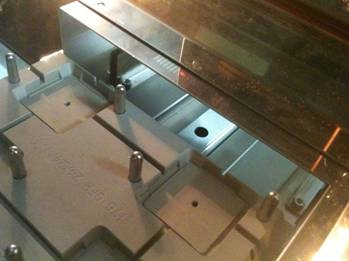
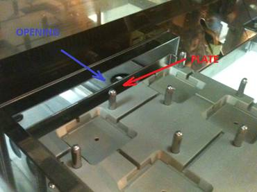
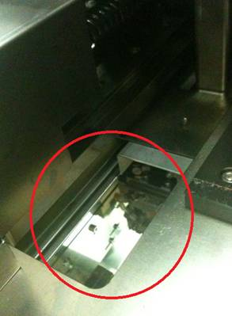

Service History
Subject: ASE NS-8080 temperature offset issue
Handler Model: NS-8080
Controller: RC520
Date: 22, 23 Mar, 14 Apr 2011
Symptom
ASE setup up the Infineon device which reads the die temperature. ASE feedback during the meeting, the temperature offsets needed is to be a large a value (20-55C) on the chamber, socket, jet heater and still the temp read is around 103-115C.
Test temperature is 125C.
Action
22 Mar 2011NS-8080 LQFP176 125DegC Octal site evaluation.Octal changkit contactors, socket guide plate and loadboard checking.Hidaka-san to feedback findings to SEC.
23 Mar 2011
EPSON request for manifold on octal site loadboard to be removed but impossible because it was locked to loadboard.Ambient mode trigger Socket Air 1 & 2, found air leak around socket guide jig. Rework by ASE to prevent air leak.Upgrade HMI to Ver 3.6 found improvement on die core temperature.Downgrade back to HMI P10.14-SAS but encountered error.Uninstalled HMI and removed NS8000 folders.Re-install HMI P10.14-SAS and restore backup, ok.Hidaka to feedback information collected to SEC and wait for improvements.
Email from Meno & Hidaka-san:
From my observation seems like the NS8080 chamber there are a lot of openings. I just need to understand on the following:
1. Is it possible for cooler air to go in the chamber coming from the ionizer fans at the input and output shuttle areas?
-> No, in chamber keep the temperature even if ionizer fans at the input and output shuttle area.
2. Would there be an issue if we install a plate on the edge of the Input shuttle to cover the opening of the chamber?
-> It do not affect the temperature accuracy in chamber.
When we have developed the handler, it was evaluated.
3. Why on the output shuttle have a plate but not high enough to cover the exit?
-> it is same as No.2 It do not need.
4. Is it feasible to install an accordion fold cover on the chamber roof where the index arm y moves?
-> It is not affected temperature accuracy around socket area.
5. Can covering these areas help to lower down the temp offset as not to make the heater work harder or have a more uniform
chamber temperature?
-> It is not affected temperature accuracy around socket area.
Do you also have updates on the improvement proposal? Thanks!
-> We will offer to you soon.
|
Input Shuttle entry (viewpoint from inside the chamber): |
Output Shuttle (viewpoint from inside the chamber): |
Chamber roof (index arm opening) |
|
 |
 |
 |
14 Apr 2011
Received 175ºC parts from Epson.
– De-installed existing jet heater and air flow meter.
– Installed jet heater and air flow meter from Epson.
– Found out heater connector type for Air 1 and 2 different from existing. Replaced correct connectors.
– Heat up to 125ºC with setting of 30KPa on air flow meter. Found out socket air 1 and 2 unable to heat up properly.
– Performed heater auto tuning using omron utility program. Input SP 90ºC, PV of socket air 1 and 2 unable to heat up to 90ºC properly with great fluctuation. If set SP to 70ºC OK.
-Tried adjusting flow switches air flow from 30~50l/min, remove temperature offset, set to 175 deg PID values, same.
– Feedback situation to Hidaka, awaiting for Epson solution.
– TBC.
15 Apr 2011
-Remove socket plate and auto tuning individual air heater– not ok.
-Checked air flow of socket air 1 and 2 ok.
-Changed back original pt sensor of socket air heater 1 – not ok.
-Found socket air 1 TC X241 connector red/white wires different configuration as original socket air heater. Same for socket air 2 TC X242.
-Swapped back to original socket air 1 and 2 heater, revert original PID values and heat up ok. Only different now is the 2pcs flow switches.
Both set of heater set(H01-NS88 and 175 deg) are same spec(200v 440W).
-Awaiting ASE to schedule temp eval when tester available.
Cause